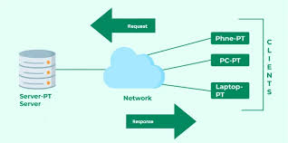
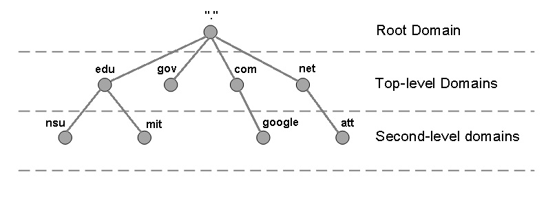

Common Technical Terms
The OSI Model
What is the OSI model and what does it reflect?
OSI stands for “Open System Interconnection” and is a model that consists of 7 layers that computer systems use to navigate through a network. The OSI model is most commonly used as reference to understand network communication, troubleshooting and development of network technologies. In practice, simplified models that consist of fewer layers are implemented into many modern networks and protocols.
The Seven Layers Of The OSI Model
1. Physical: Has the role of transmitting raw bits (Information/Input) through a physical medium such as a CAT 6 cable or a fiber connection.
2. Data Link: Has the role of transferring data in the form of “Frames” within a LAN network. In Addition, it's also responsible for ensuring reliable transfer of said data including error detection (CRC) with the help of MAC addresses. It should however be noted that it Detects errors and does not correct the error.
3. Network: Has the role of managing the addressing and routing of the datapacks between WAN networks. Internet protocols such as IPv4 and IPv6 are used to control how data is received and sent out, with routing protocols like EIGRP.
4. Transport: Has the role of establishing reliable data transfer, communication and flow control through segmentation and reassembling of data, ensuring that all data is transferred properly. This is achieved by protocols such as TCP and UDP.
5. Session: Has the role of managing sessions and/or connections between various applications through the use of port numbers.
6. Presentation: Has the role of determining the format of data, deciding how its presented. This is also where data encryption occurs. HTTPS has for example a request and response structure between a client and server.
7. Application: This is where human input/interaction occurs through websites. HTTP data to end-users/Clients is provided in this layer.
The Server-Client-Model
The Role Of A Server
The role of a server in a “Server-Client-Model” most commonly consists of being a provider of data, services and resources in general to the client, who interacts with the server to access said material. In addition, the role of the server is to handle client requests such as a URL for a website or the downloading of an online file and to process the request and respond appropriately with the requested resources.
The Role Of A Client And Its Differnece From A Server
A client can be seen as a device or software application that requires a service or resource of sorts from another device and/or application to function, most commonly provided through a network. In the Client-Server-Model, the Client is the device/application that initiates communication with a server to access data, services and resources. The client essentially acts as an interface for the user, allowing them to interact with the services provided by the server. The main difference between them can be summarized in the following: The client's role consists of requesting a server to provide them with services and resources and it awaits for a response by the server. An example of this is a web browser sending a HTTP request (Essentially a URL) to a web server to retrieve a webpage like youtube. The role of a server is to respond and provide the client with the requested resources/services and await incoming requests by clients and respond accordingly. Like providing the client a webpage in response to a HTTP request.

Differences Between HTTP And HTTPS
Differneces Between PUT,GET And POST Methods In HTTP
GET: GET is a method that is used to retrieve data from a server. Clients commonly use this method to access specific resources or data, such as websites, applications and files. GET requests are idempotent, meaning that they do not modify, update or change the server's state, which means that several requests will yield the same result without any side effects on the server.
PUT: PUT is a method that is used to update an existing resource by replacing the entire resource with the new updated resource that will act as the replacement resource. This essentially means that any resources not included in the new replacement resource will be excluded and deleted. This method has an idempotent nature as well, meaning that the result will not change with repeated requests, ensuring that the resource will always be replaced with the same content.
POST: POST is a method that is used to create new resources, meaning that unlike the GET method, a POST method includes a request body that specifies the attributes and contents of the resource that is to be created.
What Are HTTP Codes
HTTP codes are 3 digit responses sent by servers following a request from the client that can appear because of a multitude of reasons, but they are essentially status codes detailing the status of requests sent by the client to the server.
The following are some examples of infamous common status codes that the server can send:
Status Code 200: This code means that the request was successful and that the server has successfully processed the request.
Status Code 301 & 302: This code notifies the user that the requested resource has been either permanently or temporarily moved to a different location (Different URL) and that any and all future requests for said resource should be directed towards the new location. The new URL is usually provided along with the code, with the URL being permanent if the code is 301, and temporary if the code is 302.
Status Code 404: This code tells the user that the resource that they requested could not be found and can occur when the provided URL is wrong, when the resource has been moved or deleted and either not created or simply removed.
Status Code 500: This code tells the user that there is an issue with the server concerning the users request, preventing the server from processing the users request. The issue is a server side issue and has nothing to do with the user or its request.
What SSL/TLS Is And What Purpose Do They Serve In Safe Communication Over A Network
Secure Socket Layer (SSL) and Transport Layer Security (TLS) are communication protocols that allow safe communication between devices through the establishment of digital certificates that allow Clients to identify and establish encrypted network connections to Servers with the use of the SSL/TLS protocols. It should be mentioned that TLS protocol is an updated and more secure version of the SSL protocol.
What Is a SSL-Certificate And Its Importance within Safe Web Communication
A SSL-Certificate is a digital certificate that authenticates a website's identity and establishes an encrypted connection between the Web browser (Server) and Website (Client), preventing hackers and other external parties from stealing or accessing any confidential information or data that is transferred between the 2 points.
What Are DDoS Attacks And Their Consequences
Distributed Denial of Service (DDoS) Is a type of cyber attack that often consists of a large amount of devices repeatedly sending requests to a specific server/Website all at the same time, with the intention of overwhelming the servers capacity and causing it to cease the servers operations.
The Devices used by the perpetrator are almost always compromised devices that have been infected with a virus or application that allows the perpetrator to gain remote access to the compromised device and cause it to heed every command that the hacker gives.
Successful DDoS attacks have the potential of causing major damage to the owner of the server, in the forms of disruption of a businesses services leading to lost revenue from the servers downtime.

What Domain Name Systems Are
What Is Root level In The DNS-Hierarchy And Its Functions
Root Level is the name of the level where the 13 Root Cluster Servers operate, these Clusters of servers are given the task of managing and redirecting queries to Top Level Domain servers (More about that in the next section) that are relevant to the servers incoming queries.
What Is a Top Level And Examples Of It
Top Level Domains are essentially a level right below the root level and consist of the last part of the domain name. An example would be google.com/search…. The “.com” that comes right after the domain name “google” is seen as the TLD and comes in various types, with some being generic (.com, .org, .net), country specific ( .se and .uk) as well as sponsored ( .gov and .edu).
Second Level Domains And Their Importance For Web Addresses
Second Level Domains are essentially the name of the website's domain name and is found right before the TLD. an example would be google.com/search…. With “google” being the domain name as well as what people would refer to the Second Level Domain.
What Is A Sub-Domain And Its Usage In Web Addesses
A Sub-Domain is essentially an additional piece of information/note that gives the user more context of what the URL address could lead the user to. An example would be something like Men.Shop.com/blue… . With “Men” being the Sub-Domain, providing the user with the context of the link sending them to the Mens section of the shopping website.
What Does A Host Represent In A URL And Its Relation To DNS
(Im assuimng the question in the assignment is about Host names)
The “Host” is the part of the URL that shows where the resources are coming from (The Host that is mentioned in the URL). This host name is converted into or from a computer friendly ip address. The Host name consists of the TLD, SLD and anything after a protocol (Like HTTP) and before the first / in the URL.